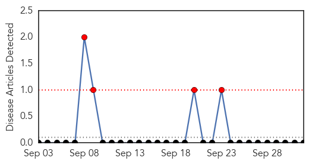
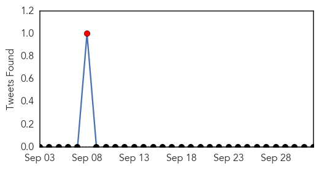
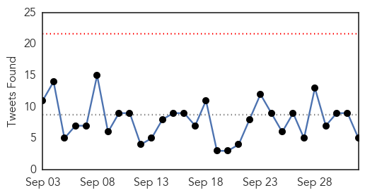

Yellow Fever
30-Day Web Trend
4 alerts, 0 warnings

30-Day Twitter Trend
1 alerts, 0 warnings

Article Locations

Article Confidences

Top Articles:
-
No articles found for Oct 02, 2015
Top Tweets:
-
No tweets found for Oct 02, 2015
Ebola
30-Day Web Trend
0 alerts, 0 warnings

30-Day Twitter Trend
0 alerts, 0 warnings

Article Locations

Article Confidences

Top Articles:
- 0.999
- International Cooperation the Key to Stopping Ebola
- 0.986
- Testing of Russian Ebola vaccine on volunteers shows 'very good' results
- 0.982
- Kids with Ebola, bird flu or TB? Texas Children’s Hospital will be ready
- 0.970
- Sierra Leone counting down to Ebola freedom is long and costly
- 0.951
- Kids With Ebola, Bird Flu Or TB? Texas Children's Hospital Will Be Ready
- 0.934
- Texas Children's Hospital readies for kids with Ebola
- 0.874
- STOP WASHING DEAD BODIES!Palo Conteh Warns Western Area « Awoko Newspaper
- 0.849
- News Scan for Oct 01, 2015
- 0.791
- Sierra Leone News: Handicap Int’l Co-Founder meets VP Foh « Awoko Newspaper
- 0.772
- Training healthcare workers to save Liberia’s babies
- 0.772
- Midwifery Curriculum Review Meeting ends in Freetown
- 0.748
- Ellen wants health, human security prioritized
- 0.686
- Halyard Health : Supporting MedShare International
- 0.650
- Guinea's National Day
- 0.574
- Nyenswah tells world ‘Liberia has effectively beaten Ebola’
- 0.526
- Ebola patient’s son: Mom is getting better
- 0.519
- Royal Navy medal haul for ebola mission to Sierra Leone
Top Tweets:
- 0.927
- RT: NEWS SCAN: Ebola in Guinea health workers HPV vax against genital warts flu shots in schoolkids flu A vs flu B http://t.co/U…
- 0.893
- Sierra Leone: Frontline Nurses In Aftermath of Ebola Outbreak Battle ... - Huffington Post http://t.co/xZi5s8jDnL ebola EVD
- 0.706
- .@HaertlG -- did the Ebola Emergency Committee's report come out?
- 0.654
- Ebola Virus Disease in HealthCareWorkers — Guinea 2014 http://t.co/jXE9c4DdZJ
- 0.653
- RT: About 850000 people were trained on latest Ebola guidance such as infection control and entry/ exit screening. http://…